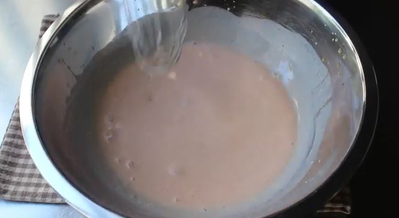
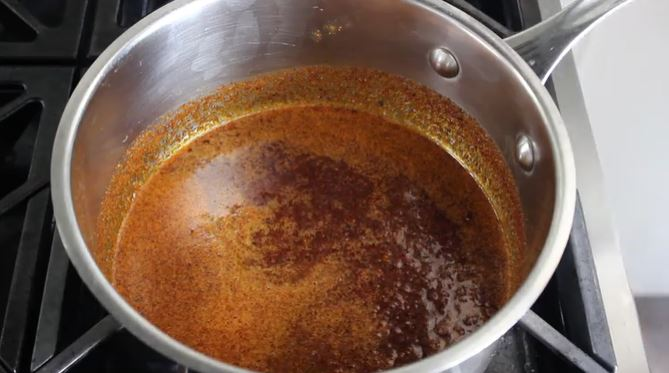
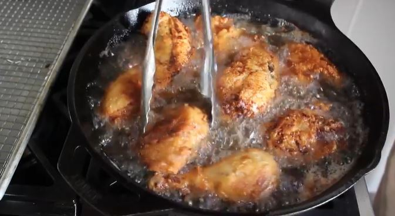
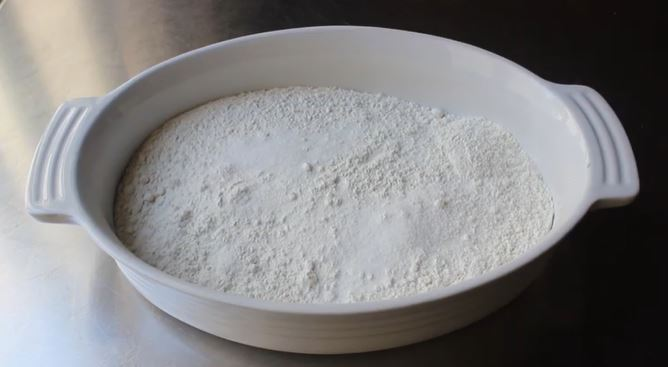
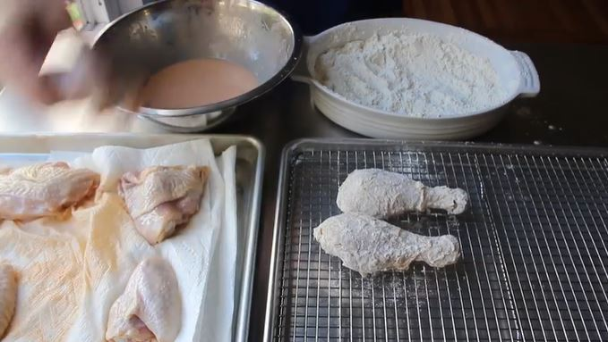
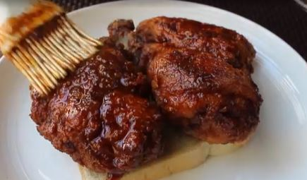

Nashville Hot Chicken

Allergens:Eggs | Dairy | Wheat
Spice Level:
Decription
The spicy and delectable chicken, ultra-crispy and glazed in nashville style hot-oil that seeps into the skin.
This Southern specialty is able to be made in your very own home at any serving size necessary for everyone to enjoy.
Follow the recipe, sourced from Delish.com, and adjust the amount of cayenne to your level of spice and enjoy.
Yields: 12 Servings (serves 3-4 ppl)
Shelf Life: 3-4 Days in Refrigerated Sealed Container
Prep Time | Cook Time | Total Time
-- 3hr 20min -- 1hr 10min -- 4hr 50min --
Ingredients and Materials
For the Chicken
3 to 4 lb. bone-in skin-on assorted pieces of Chicken
Kosher Salt
Freshly Ground Black Pepper
2 Cups Whole Milk or Buttermilk
3 Large Eggs
1 tbsp Hot Sauce
2 Cups All-Purpose Flour
2 tsp Paprika
1 tsp Cayenne Pepper
4 Cups of Vegetable Oil (for Frying)
(optional) Sliced White Bread & Pickles
For the Spicy Oil
4 tbsp Cayenne Pepper
2 tbsp Brown Sugar
1 tbsp Paprika
1 tsp Garlic Powder
1 tsp Chili Powder
1 tsp Kosher Salt
Kitchenware/Appliances
2 Large Bowls (heatproof)
2 Shallow Bowls
1 Large Pot
1 Medium Pyrex Measuring Cup
1 Large Rimmed Baking Sheet
1 Metal Rack (fits into baking sheet)
1 Candy Thermometer
Basting Brush
Whisk
Plastic Wrap
Roll of Paper Towels
Refrigerator
Oven
Instructions
Chicken Prep
1. In a large bowl, season chicken generously with salt and pepper.
2. Cover with plastic wrap and let .
Chill in fridge for 3 hours or up to overnight
3. Line large rimmed baking sheet with metal rack.
Wet Mix Prep
In Shallow Bowl
4. Add 2 cups milk.
5. Add 3 eggs.
6. Add 1 tbsp hot sauce.
7. Whisk wet bowl.
Dry Mix Prep
In Shallow Bowl
7. Add 2 cups of flour.
8. Add 2 tsp paprika.
9. Add 1 tsp cayenne.
10. Mix dry bowl.
Chicken
11. Pat chicken dry.
12. Dredge Chicken in flour (dry) mixture.
13. Dip in milk (wet) mixture.
14. Re-dredge in flour (dry) mixture.
15. Place on wire rack.
In Large Pot
16. Heat oil until candy thermometer inserted into pot reads 350°.
17. In batches, fry chicken (until golden) about 6-8 minutes.
18. Scoop out 1/2 cup of hot oil from pot into pyrex measuring cup.
(Let remaining oil cool before discarding)
Spicy Oil
In large bowl
19. Add 4 tbsp cayenne pepper.
20. Add 2 tbsp brown sugar.
21. Add 1 tbsp of paprika.
22. Add 1 tsp garlic powder.
23. Add 1 tsp chili powder.
24. Add 1 tsp kosher salt.
25. Mix bowl.
26. Pour the reserved 1/2 cup of hot frying oil from Chicken.
27. Whisk bowl thoroughly.
28. Pour spicy oil over chicken before serving.
(optional) Place over white bread and dress with sliced pickles for true Nashville Style
Serve Hot, Dig In, and Enjoy!








Recipe Websites
Delish.com has a wide array of advertisements for other food news and recipes lining the top, the menu system is simple, and the layout includes nice additions like the amount of servings it "yields", the "prep time" for ingredients, and the "total time" to make the dish, giving the reader more intracate information
allrecipes.com has a changing header menu when you scroll that changes to include the pinterest link of the website/author, as well as a video of the food being eaten included on the recipe cite. The website also allows you to change the number of servings and it outputs the number of ingredients necessary, as well as nutrition facts, people's feedback, and methods to share or print the recipe.
yummly.com has a minimalistic, condensed format that has all the essential information for a recipe and gives curated photos of the result to boot. The related bar at the bottom gives the user a vast array of peoples' recipes for the main dish.
Non-Recipe Websites
Today in Desiny (TID) has a very straightforward and stylized layout for those who need information not directly present in the game for players. There are activities where there are multiple maps that are on rotation and so the website has the images of them scrolled through like a powerpoint, and the countdowns for all the times which the activities are available in game, gives the player a very clear depiction of the information it wishes to supply.
Minecraft.net gives a hyper-stylized layout that gives players the oppurtunity to buy minecraft or keep up to date on minecraft news. The most prominent feature to the site is the background which has a blocky feel but a cascade change in color.
Poison's (the band) site is extreme in all facets; Overloading the senses with merch, tour dates, and impact font is the main goal of the rock band's website. It is anything but boring and is a great advertisement of everything Poison.
Recipe Research Feedback Google Doc
Josh Silber Document